TiDB txn
- TiDB的修改会先保存在MemDB中, 在两阶段提交中会batch的提交这些修改。
- commit/prewrite/resolvelock等都需要处理regionError
- Timestamp
- CommitterMutations
- twoPhaseCommitter::execute
- doActionOnMutations
- actionPrewrite::handleSingleBatch
- actionCommit::handleSingleBatch
- Pessimestic Lock(悲观锁)
- cleanup
- Questions:
- 参考文献
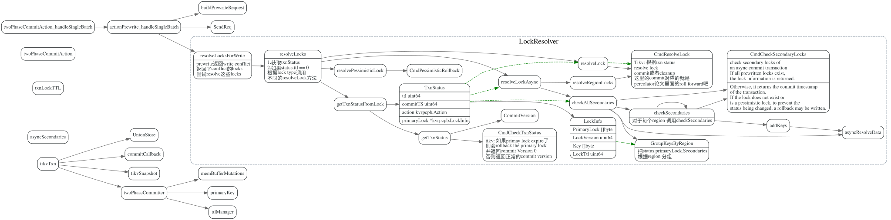
Timestamp
startTs
在执行start transaction时，会去Oracle服务获取时间戳，作为事务的startTS, startTs会保存在TransactionContext中
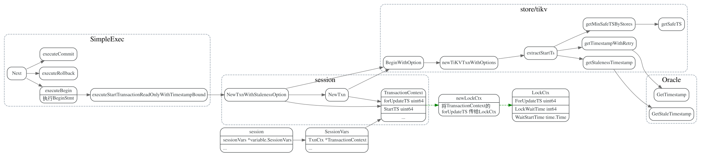
forUpdateTS
forUpdateTS 是每个write的sql stmt都会更一次吗？
TODO: 解释ForUpdateTS的作用，是什么时候更新的. UpdateForUpdateTS
// UpdateForUpdateTS updates the ForUpdateTS, if newForUpdateTS is 0, it obtain a new TS from PD.
func UpdateForUpdateTS(seCtx sessionctx.Context, newForUpdateTS uint64) error {
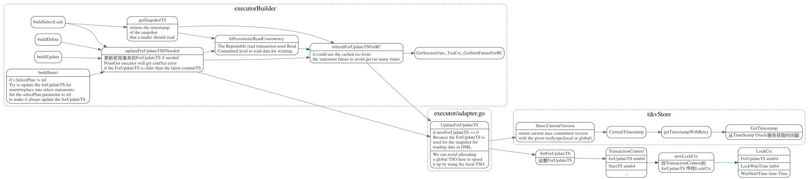
commitTS
事务提交的commitTs, 在commit之前去time oracle 服务获取timestamp.
MinCommitTs/MaxCommitTs
线性一致性实际上有两方面的要求：
循序性（sequential）
实时性（real-time）
实时性要求在事务提交成功后，事务的修改立刻就能被新事务读取到。新事务的快照时间戳是向 PD 上的 TSO 获取的，这要求 Commit TS 不能太大，最大不能超过 TSO 分配的最大时间戳 + 1。
async commit会用到minCommitTs, 省去了一次去Time服务获取tso的操作。
每个TiKV server有个ConcurrencyManager 记录了max_ts
对于 Async Commit 事务的每一个 key，prewrite 时会计算并在 TiKV 记录这个 key 的 Min Commit TS，事务所有 keys 的 Min Commit TS 的最大值即为这个事务的 Commit TS。 TiDB 的每一次快照读都会更新 TiKV 上的 Max TS。Prewrite 时，Min Commit TS 会被要求至少比当前的 Max TS 大2，也就是比所有先前的快照读的时间戳大，所以可以取 Max TS + 1 作为 Min Commit TS。
#![allow(unused_variables)] fn main() { // If we want to use async commit or 1PC and also want linearizability across // all nodes, we have to make sure the commit TS of this transaction is greater // than the snapshot TS of all existent readers. So we get a new timestamp // from PD and plus one as our MinCommitTS. if commitTSMayBeCalculated && c.needLinearizability() { failpoint.Inject("getMinCommitTSFromTSO", nil) latestTS, err := c.store.oracle.GetTimestamp(ctx, &oracle.Option{TxnScope: oracle.GlobalTxnScope}) // If we fail to get a timestamp from PD, we just propagate the failure // instead of falling back to the normal 2PC because a normal 2PC will // also be likely to fail due to the same timestamp issue. if err != nil { return errors.Trace(err) } // Plus 1 to avoid producing the same commit TS with previously committed transactions c.minCommitTS = latestTS + 1 } // Calculate maxCommitTS if necessary if commitTSMayBeCalculated { if err = c.calculateMaxCommitTS(ctx); err != nil { return errors.Trace(err) } } }
maxCommitTs的作用是什么？
Tikv 在async_commit_timestamps 中会检查min_commit_ts和max_commit_ts 如果min_commit_ts > max_commit_ts 会返回CommitTsTooLarge
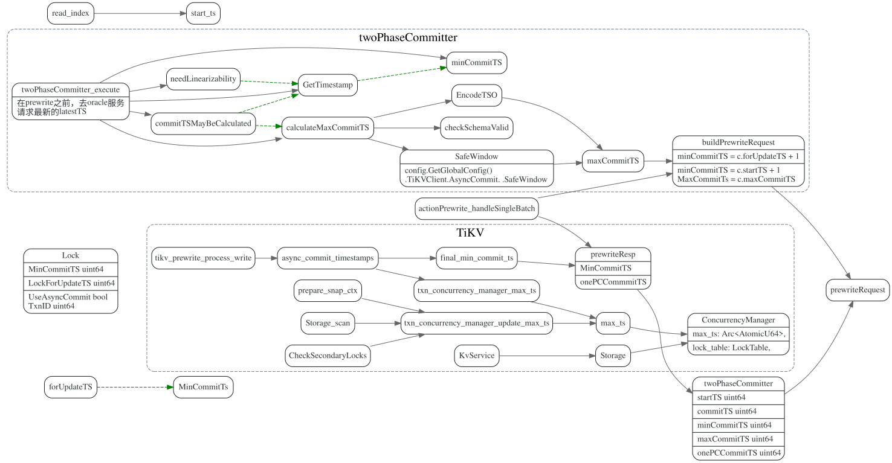
TiKV update_max_ts
每次对于TiKV的读操作，以及事务的write command 都会更新max_ts.
读操作分为coprocessor和直接使用Storage 接口去get/scan的， 还有Replica read这块做了特殊处理。
update max_ts on read
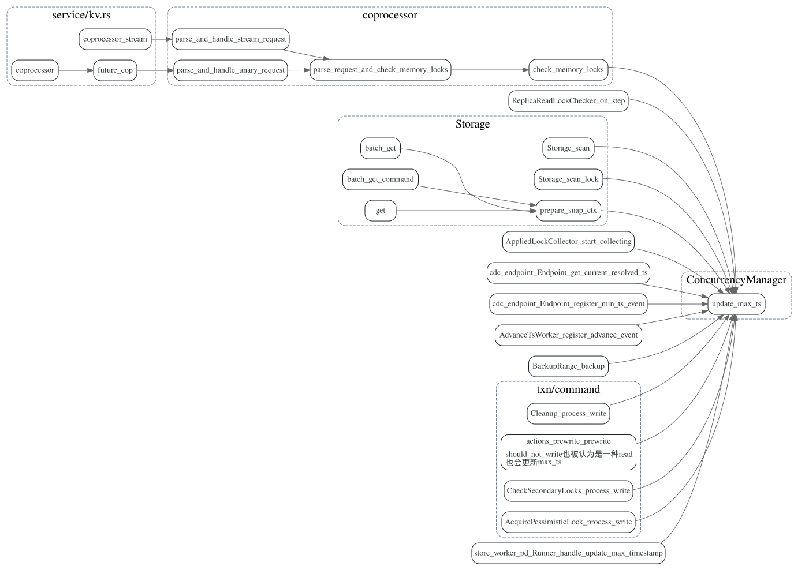
replica reader
There is a time gap between setting the “min commit TS” in the lock and the lock being applied to the raft store. These unapplied locks are saved in memory temporarily. So readers must see these in-memory locks which only exist on the leader.
replica reader 是怎么更新这个max_ts的？
replica reader 在read之前会发readIndex消息给leader吗？
follower reader在发送ReadIndex 请求给leader 会附带上start_ts,
然后leader在处理reader index消息时，会回调ReplicaReadLockChecker::on_step
在该函数中更新concurrency_manager的max_ts。
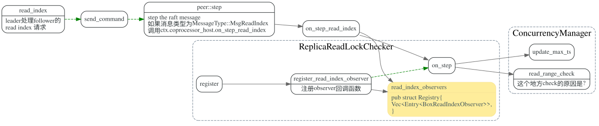
check memory locks in replica read #8926
addition_request locked ReadIndexContext ReplicaReadLockChecker
onePCCommitTS
CommitterMutations
基本数据流程如下：
KVTxn的write操作(Set, Delete) 会现将操作
保存在MemDB中。然后在KVTxn::Commit时
创建twoPhaseCommitter, 并调用twoPhaseCommitter::initKeysAndMutations
遍历MemDB, 初始化memBufferMutations.
在twoPhaseCommitter::execute中，首先对memBufferMutations先按照region做分组，
, 分为groupMutations, 其次每个分组内，按照size limit，分成batchMutations。
最后调用不同action的handleSingleBatch, 发送对应的cmd
到TiKV。
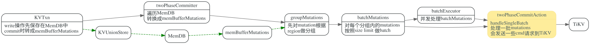
数据结构引用关系如下:
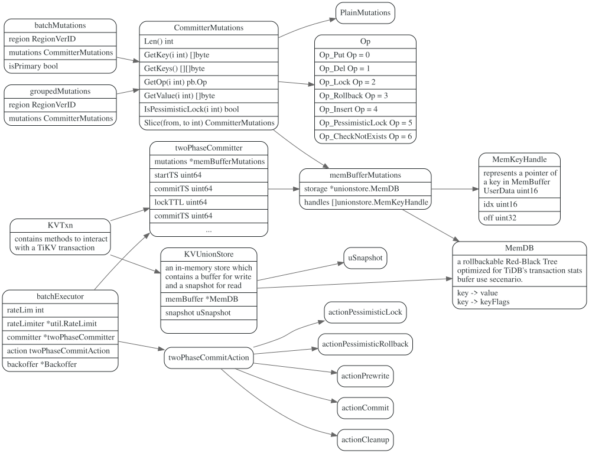
KeyFlags
MemDB
twoPhaseCommitter::execute
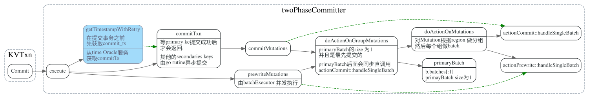
AsyncCommit execute
async commit 省掉了一次commit之前去time oracle 服务器获取时间戳的调用。
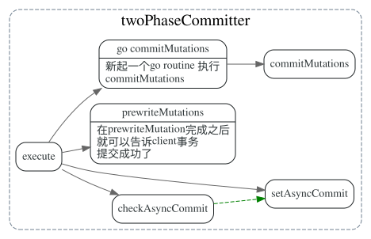
doActionOnMutations
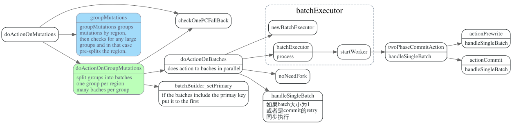
actionPrewrite::handleSingleBatch
tries to send a signle request to as single region.
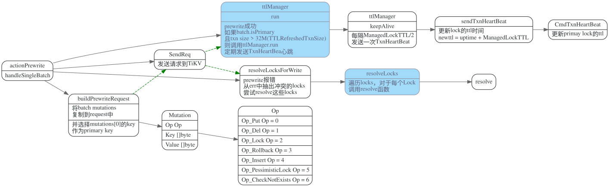
resolveLocksForWrite
先getTxnSta获取primary lock状态，然后和当前write事务冲突的secondary key做commit或者rollback.
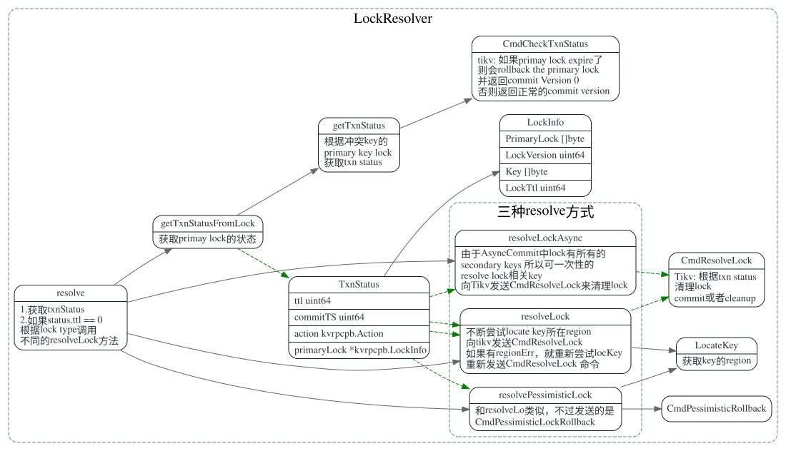
resolveLockAsync
由于Async commit的 primay lock中保留了Secondaries locks列表， 所以这块可一次性的把这个lock的所有secondary lock都resolve掉。
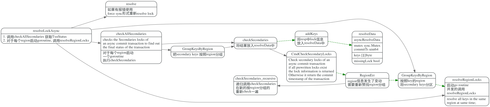
resolveRegionLocks
resolveRegionLocks is essentially the same as resolveLock, but we resolve all keys in the same region at the same time.
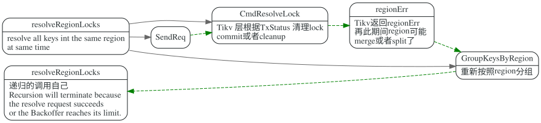
actionCommit::handleSingleBatch
TiDB中提交primay key 然后就返回，其他的seconaries keys 异步提交的，这个过程体现在哪里？
在doActionOnMutations中，会做检查，NoNeedFork就会以同步的方式提交查询。
actionCommit::handleSingleBatch
// Group that contains primary key is always the first.
// We mark transaction's status committed when we receive the first success response.
c.mu.committed = true
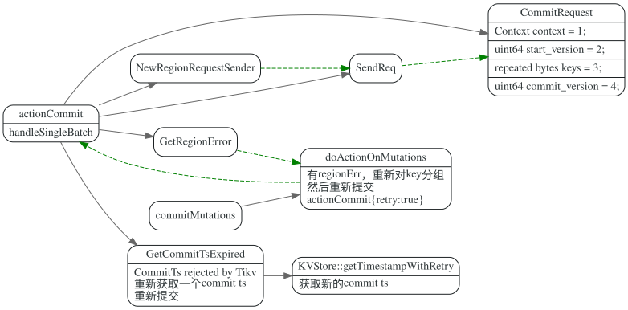
Pessimestic Lock(悲观锁)
悲观事务步骤:
- 从 PD 获取当前 tso 作为当前锁的 for_update_ts
- TiDB 将写入信息写入 TiDB 的内存中（与乐观锁相同）
- 使用 for_update_ts 并发地对所有涉及到的 Key 发起加悲观锁（acquire pessimistic lock）请求，
- 如果加锁成功，TiDB 向客户端返回写成功的请求
- 如果加锁失败
- 如果遇到 Write Conflict， 重新回到步骤 1 直到加锁成功。
- 如果超时或其他异常，返回客户端异常信息
LockCtx
for_update_ts是什么？表示tidb的写入ts? 用来做冲突检测的？
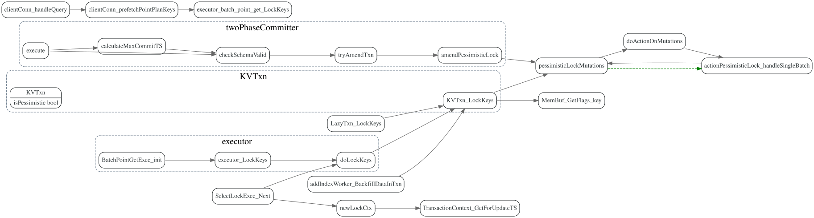
加锁规则
- 插入（ Insert） 如果存在唯一索引，对应唯一索引所在 Key 加锁 如果表的主键不是自增 ID，跟索引一样处理，加锁。
- 删除（Delete） RowID 加锁
- 更新 (update) 对旧数据的 RowID 加锁 如果用户更新了 RowID, 加锁新的 RowID 对更新后数据的唯一索引都加锁
LockKeys
KeyFlags
flagPresumeKNE KeyFlags = 1 << iota
flagKeyLocked
flagNeedLocked
flagKeyLockedValExist
flagNeedCheckExists
flagPrewriteOnly
flagIgnoredIn2PC
persistentFlags = flagKeyLocked | flagKeyLockedValExist
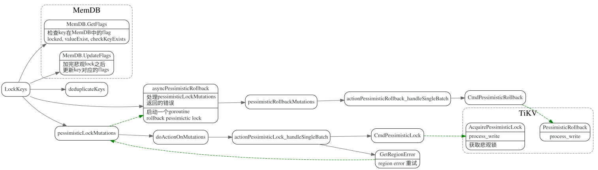
TiKV端获取Pessimistic处理方法:
- 检查 TiKV 中锁情况，如果发现有锁
- 不是当前同一事务的锁，返回 KeyIsLocked Error
- 锁的类型不是悲观锁，返回锁类型不匹配（意味该请求已经超时）
- 如果发现 TiKV 里锁的 for_update_ts 小于当前请求的 for_update_ts(同一个事务重复更新)， 使用当前请求的 for_update_ts 更新该锁
- 其他情况，为重复请求，直接返回成功
- 检查是否存在更新的写入版本，如果有写入记录
- 若已提交的 commit_ts 比当前的 for_update_ts 更新，说明存在冲突，返回 WriteConflict Error
- 如果已提交的数据是当前事务的 Rollback 记录，返回 PessimisticLockRollbacked 错误
- 若已提交的 commit_ts 比当前事务的 start_ts 更新，说明在当前事务 begin 后有其他事务提交过
- 检查历史版本，如果发现当前请求的事务有没有被 Rollback 过，返回 PessimisticLockRollbacked 错误
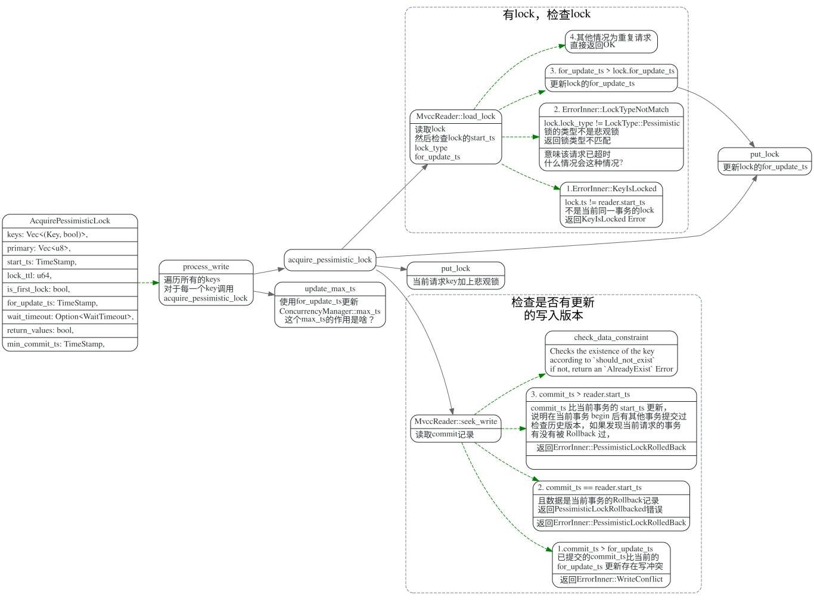
caller of lock keys
TODO: 没找到insert/delete/update这块的lock代码
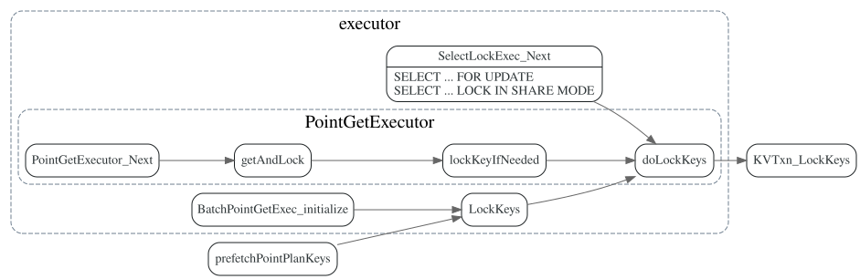
cleanup
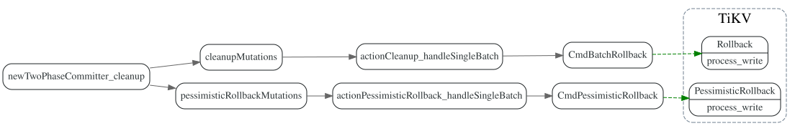
Questions:
- 如果某个prewrite batch失败了，其他正在执行，或者已经执行的Prewrite batch是怎么rollback的？
- async commit, one pc commit, minCommitTS, PessimisticLock 这几单独拿出来专题研究。
- 同一个事物只能在同一个TiDB上跑吗？
- ForUpdateTS 这个是干什么用的？
#![allow(unused_variables)] fn main() { // The isolation level of pessimistic transactions is RC. `for_update_ts` is // the commit_ts of the data this transaction read. If exists a commit version // whose commit timestamp is larger than current `for_update_ts`, the // transaction should retry to get the latest data. }